est une ville côtière du Sahel tunisien, au centre-est de la Tunisie, située sur une presqu'île au sud-est du golfe d'Hammamet, à une vingtaine de kilomètres à l'est de Sousse et à 162 kilomètres au sud de Tunis. En 2014, la population de la municipalité atteint 93 306 habitants. La ville est le chef-lieu du gouvernorat du même nom depuis 1974.

Mais Monastir, c’est aussi l’histoire d’une ville qui s’étend sur plus de dix siècles. En effet, la ville fait partie, avec Sousse et Kairouan, des toutes premières villes arabes fondées en Ifriqiya. Elle est bâtie sur les ruines de l'ancienne ville punico-romaine de Ruspina. La ville de Monastir est connue pour son Ribat, entre autres choses, qui fut érigé par le wali Harthama Ibn Ayoun sur ordre du calife abbasside Haroun ar-Rachid en 796 comme moyen de défense contre les attaques de la flotte byzantine en Méditerranée. Il représente, avec le Ribat de Sousse, l'une des deux forteresses les plus importantes de la côte du Sahel.

Monastir possède un musée des arts islamiques, inauguré le 5 août 1958 et qui est logé au premier étage de l'aile sud du ribat ; il comporte près de 300 œuvres (fragments de bois, stèles funéraires, céramiques lustrées, etc.) et reçoit chaque année la visite de presque 100 000 visiteurs

 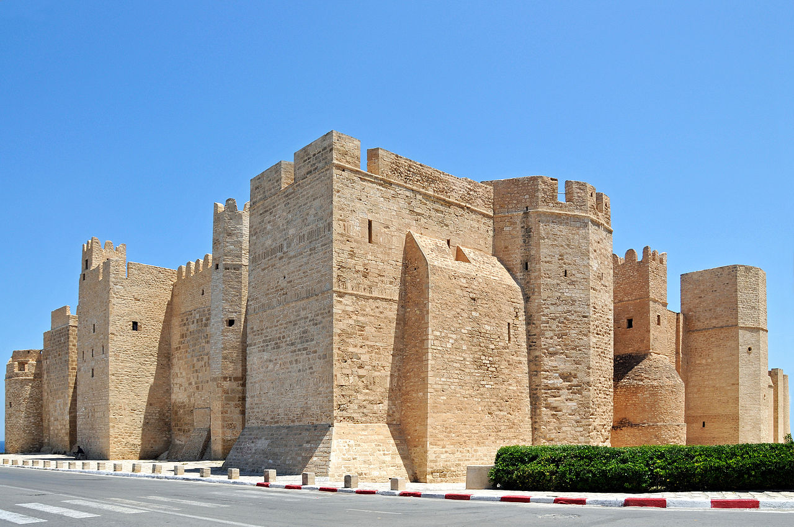
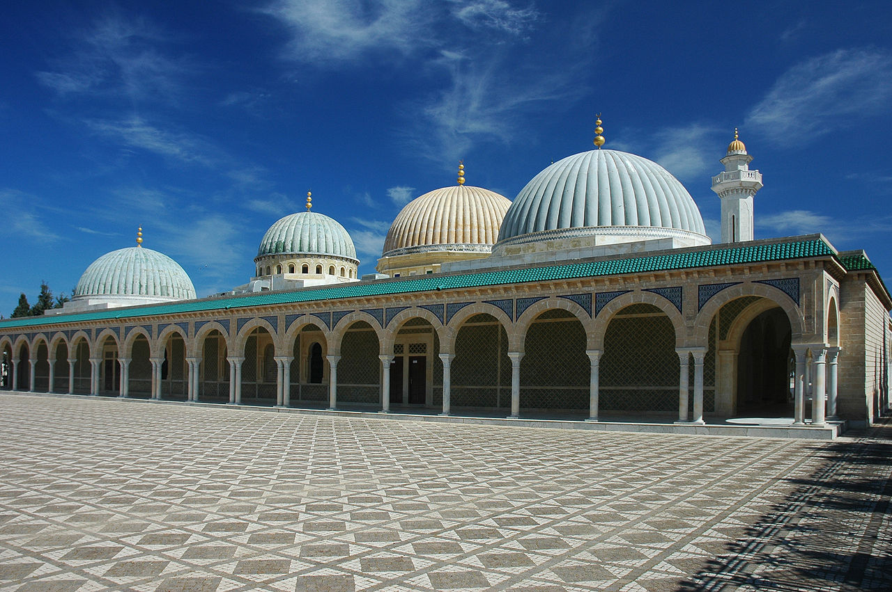
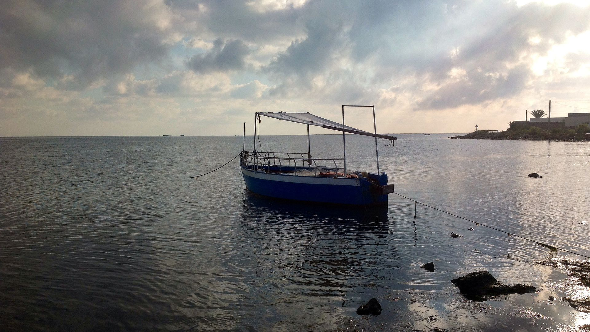
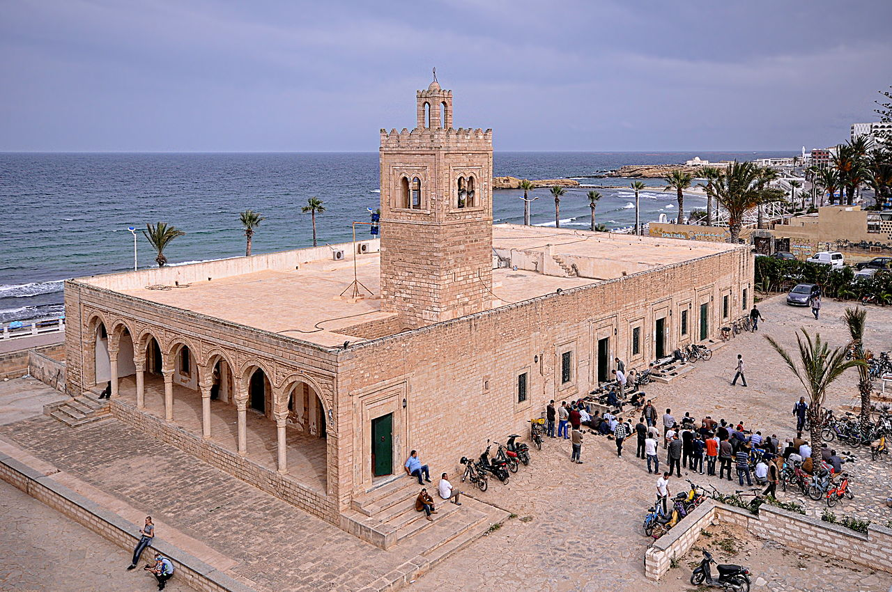
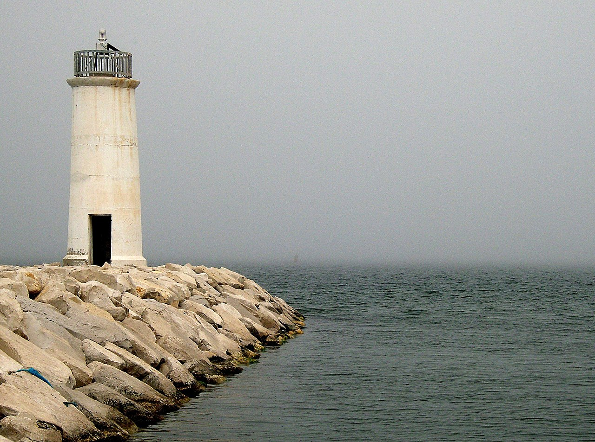
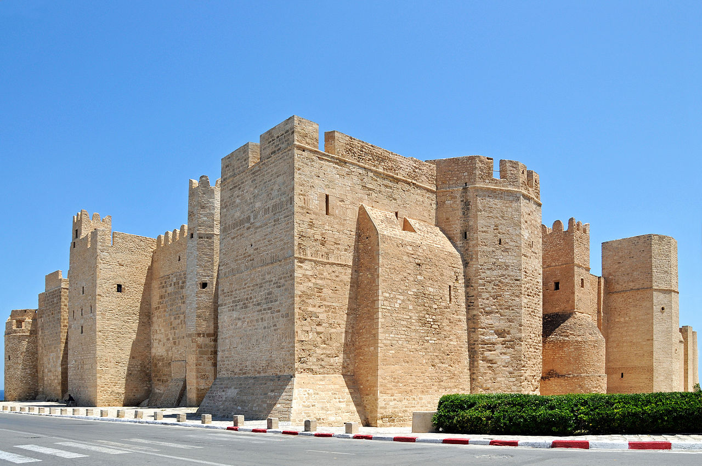
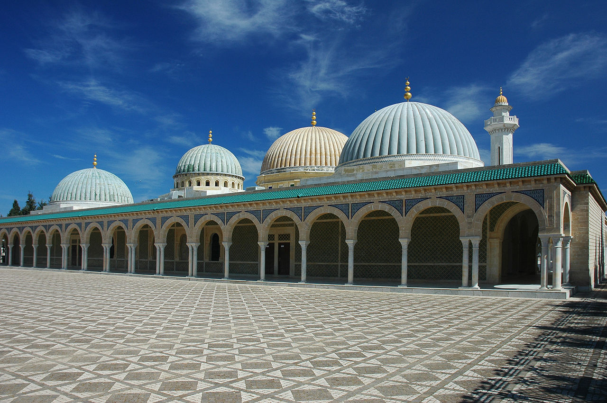
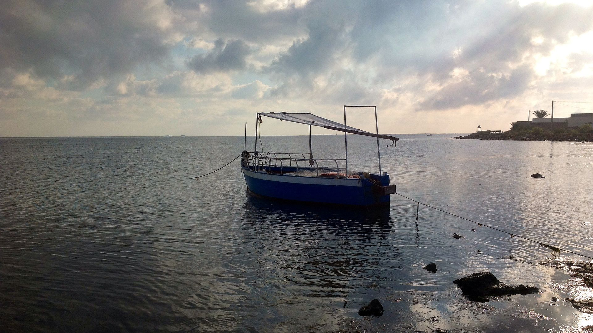
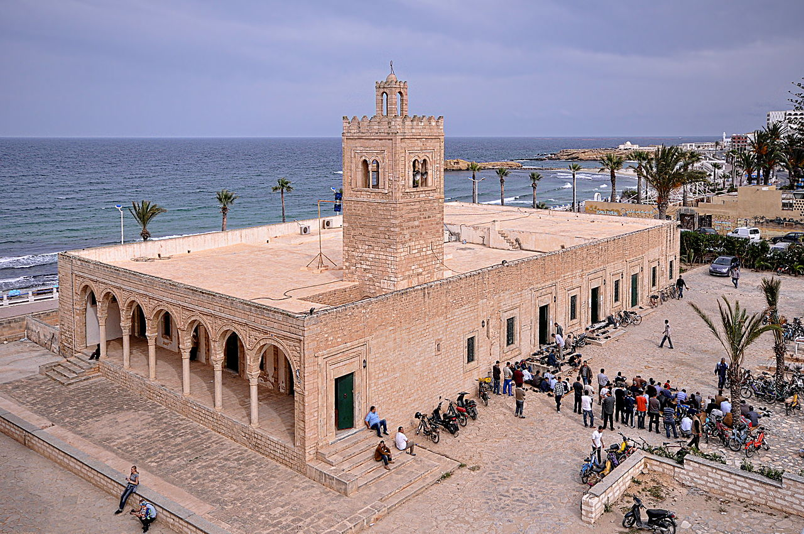
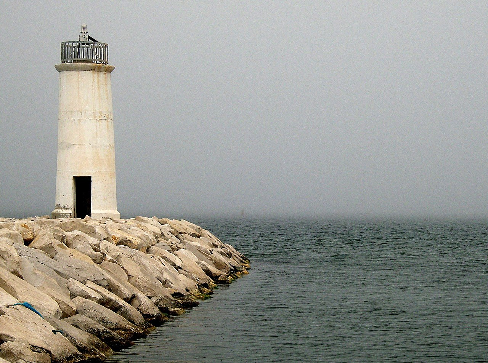
 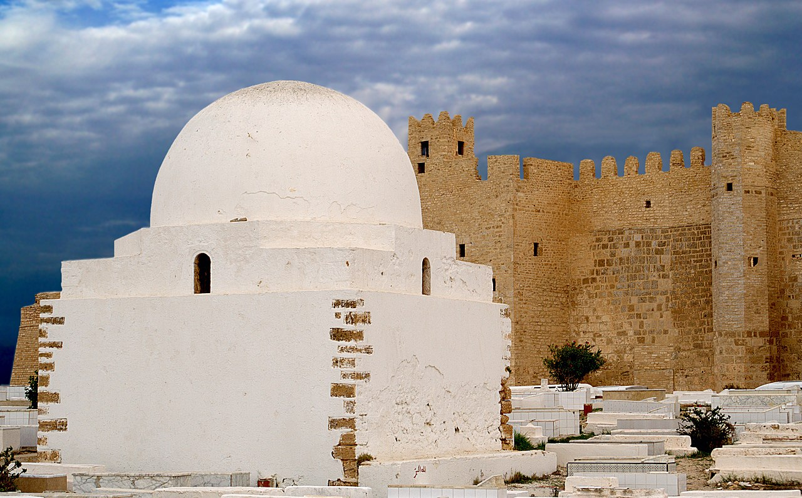
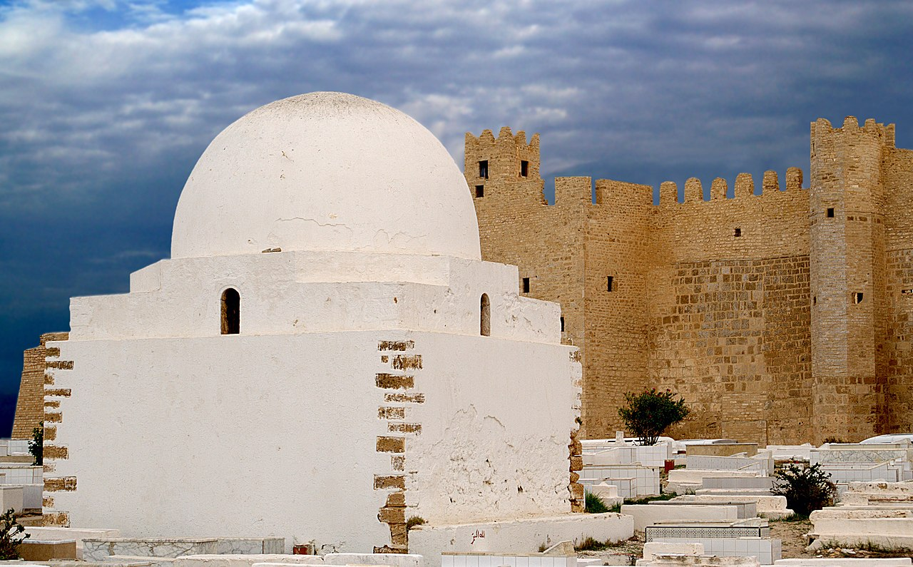